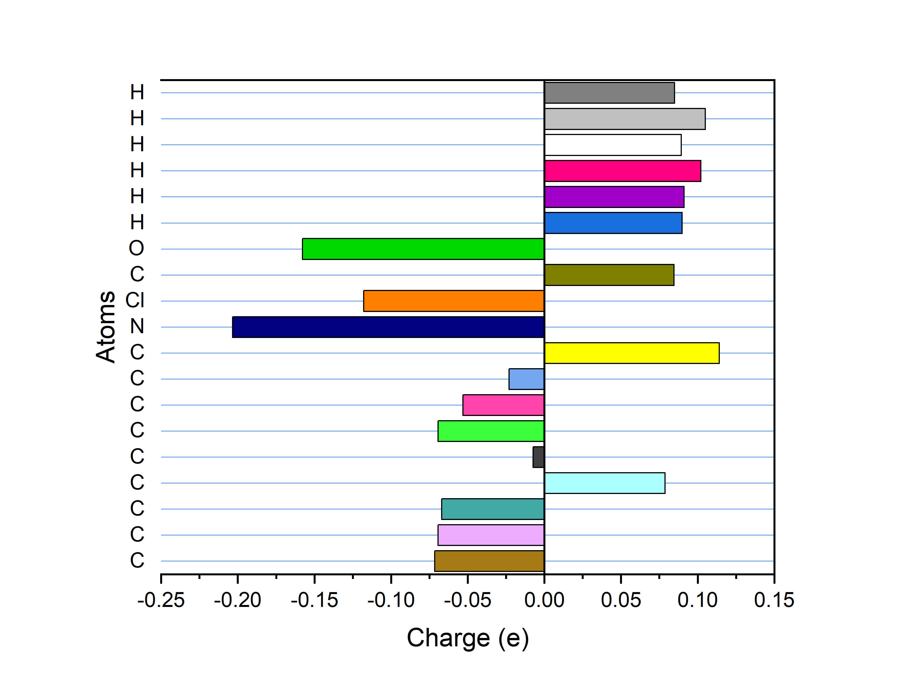

pyscf tools for Mulliken atomic charge
This page contains a Python script to calculate a Mulliken atomic charges on the SCF density.
Note
This script performs a SCF calculation and carries out a Mulliken population analysis on the resulting density matrix. The resulting charges describe the distribution of electron density to identify electron rich and electron-deficient atoms.
mullpop.py
#!/usr/bin/env python
# coding: utf-8
# edit by dindagustiayuedu@gmail.com
# import directories
from pyscf import gto, scf
from pyscf.tools import cubegen
# Run Mulliken Charge Atoms
from pyscf import gto, scf, dft, tddft
mol = gto.M(atom="opt_C10H6ClNO.xyz")
# set basis set
mol.basis = "6-31+G**"
# Set DFT functional
mf = dft.RKS(mol)
mf.xc = "b3lyp"
mf.kernel()
# Run Mulliken Population
pop, charge = mf.mulliken_pop(verbose = 0)
# Print the atomic charges for each atom
for i in range(mol.natm):
print(f" Atom {i} => Charge {charge[i]}")
For example the Mulliken atomic charges of 2-Chloro-3-quinolinecarboxaldehyde molecule:

Mulliken atomic charge distribution of 2-Chloro-3-quinolinecarboxaldehyde
converged SCF energy = -963.331275090069 Atom 0 => Charge -0.07155556667722429 Atom 1 => Charge -0.06938306534595551 Atom 2 => Charge -0.06691020432142292 Atom 3 => Charge 0.07877331047931868 Atom 4 => Charge -0.007440620001702314 Atom 5 => Charge -0.06941163513276205 Atom 6 => Charge -0.05317444608919786 Atom 7 => Charge -0.023123207928326117 Atom 8 => Charge 0.11425268016752899 Atom 9 => Charge -0.20339105032427351 Atom 10 => Charge -0.11792333805241739 Atom 11 => Charge 0.08462452045148172 Atom 12 => Charge -0.1577599824742908 Atom 13 => Charge 0.08983387163816325 Atom 14 => Charge 0.09111122241361247 Atom 15 => Charge 0.1021505478343313 Atom 16 => Charge 0.08935584367632987 Atom 17 => Charge 0.10500120992584472 Atom 18 => Charge 0.08496990976095753
Table. Mulliken atomic charges of 2-Chloro-3-quinolinecarboxaldehyde calculated by B3LYP/6-31+G** method.
No. |
Atom |
Charge |
No. |
Atom |
Charge |
|
1 |
C |
-0.0715 |
11 |
Cl |
-0.1179 |
|
2 |
C |
-0.0693 |
12 |
C |
0.0846 |
|
3 |
C |
-0.0669 |
13 |
O |
-0.1577 |
|
4 |
C |
0.0787 |
14 |
H |
0.0898 |
|
5 |
C |
-0.0074 |
15 |
H |
0.0911 |
|
6 |
C |
-0.0694 |
16 |
H |
0.1021 |
|
7 |
C |
-0.0531 |
17 |
H |
0.0893 |
|
8 |
C |
-0.0231 |
18 |
H |
0.105 |
|
9 |
C |
0.1142 |
19 |
H |
0.0849 |
|
10 |
N |
-0.2033 |